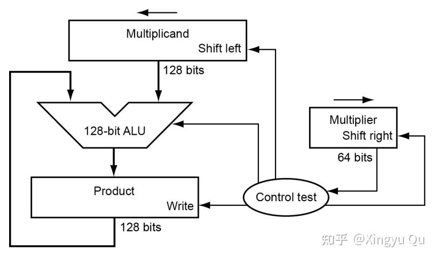
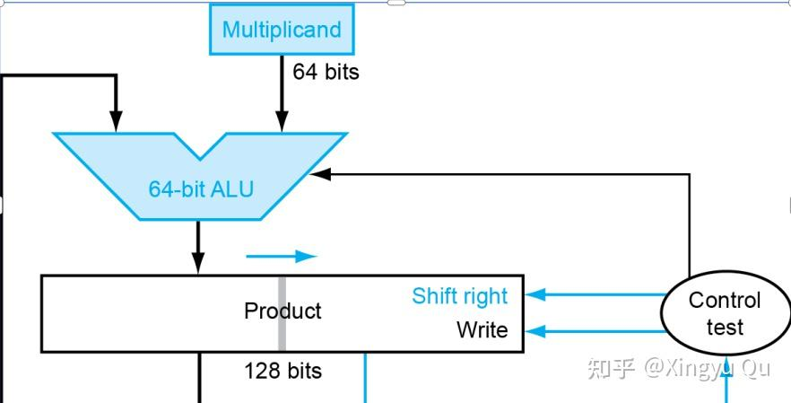
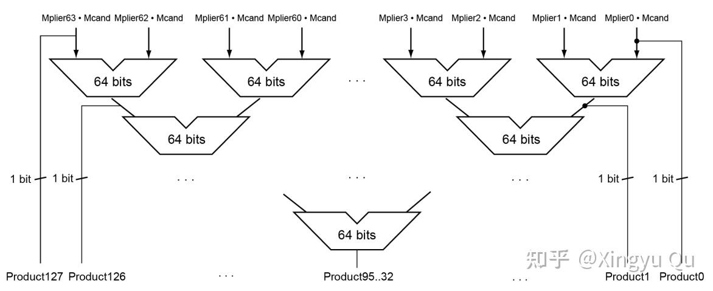
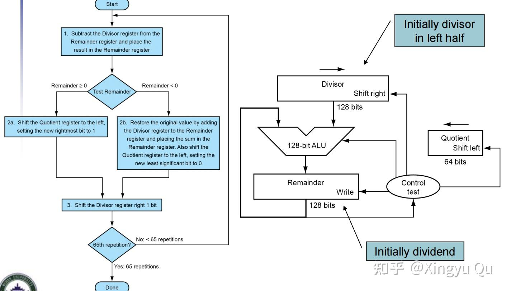
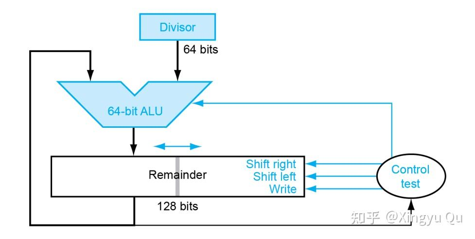
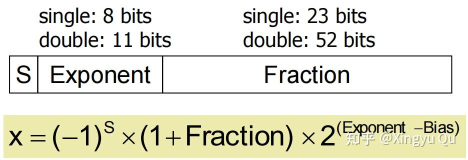
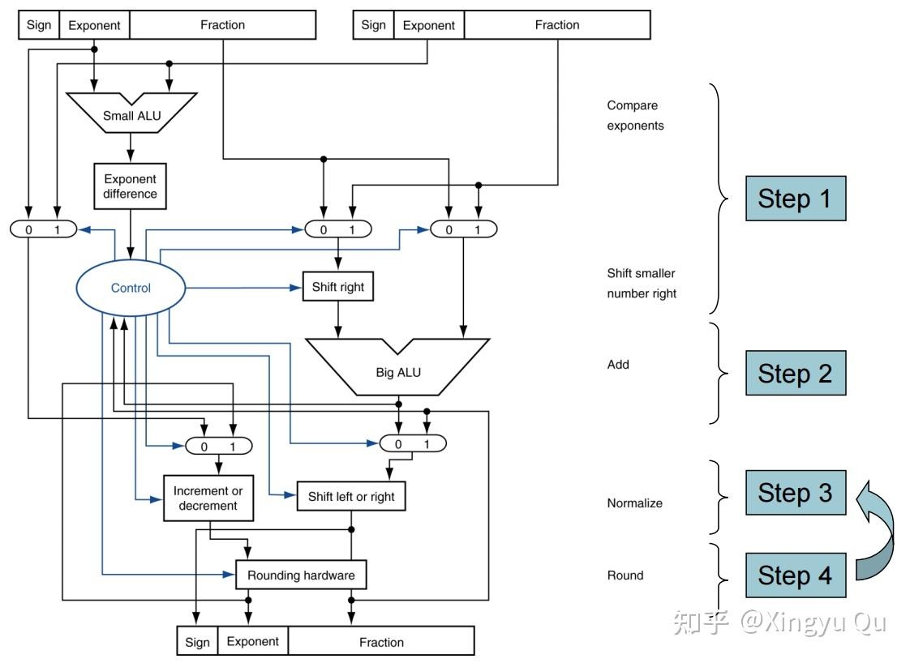

概述
上一讲讨论了 ALU 与超前进位加法器；本讲介绍乘法器、除法器，以及 RISC-V 浮点表示与浮点运算。
并行进位加法器、浮点加法器与乘法器的参考实现见配套 GitHub 仓库。
WHU-XingyuQu/RISC-V-cpu: Realize a RISC-V-based CPU.（一）乘法器
1.范式进化
（1）纯串行版

每次需要将被乘数左移一位，乘数右移一位，结果写入寄存器中，该算法计算两个32位数相乘要花费约200个时钟周期。
（2）并行优化

如果乘数位是1，并行执行：
- 对乘数左移一位
- 对被乘数右移一位
- 被乘数加到积上
改良后的乘法器和第一版相比被乘数和ALU都被缩减到64位，乘数放到了积寄存器的右半部分来进行右移，取消了独立的乘数寄存器。
（3）快速乘法

利用充足的硬件资源可以实现高度的流水线操作，将32个加法器组织成树状的结构（图中是64位），只需
log2(32)=5个32位长加法的时间
2.RISC-V乘法指令
mul(乘), mulh(乘法取高位), mulhu(无符号乘法取高位), mulhsu(有符号与无符号乘法取高位)
mul得到低32位；其它得到高32位
（二）除法器
1.范式进化
（1）串行

与乘法相似的移位和加操作。
（2）并行优化
通过操作数移位和商与减法同时进行来加速，加法器和寄存器的宽度减半，将商寄存器和余数寄存器的右半部分拼在了一起。

与乘法非常相似的结构。
（3）快速除法
虽然可以用许多加法器来加速乘法，但是不能对除法使用相同的方法，因为在除法运算执行下一步运算之前需要知道减法结果的符号。
但是依然有一些技术可以每步产生多于一位的商。SRT除法试图根据被除数和余数的高位来查找表，以预测每步的多个商的位数，并依靠后续步骤来纠错预测。SRT 除法涉及更复杂的商选择与纠错机制，本文不展开。
2.RISC-V除法指令
div(除), divu(无符号除), rem(余数), remu(无符号余数)
（三）浮点数及其运算
1.位布局

- 符号位 S：0 正数，1 负数
- 阶码 E：8 位无符号，偏置(bias)=127
- 尾数 M：23 位二进制小数，正规数隐含前导 1（即 1.xxxxxx），次正规数没有隐含 1（即 0.xxxxxx）
2.数值解释
- 正规数（1 ≤ E ≤ 254）
\mathrm{value} = (-1)^S \times (1.\mathrm{fraction}) \times 2^{E-127} - 次正规数（E = 0, fraction ≠ 0）
\mathrm{value} = (-1)^S \times (0.\mathrm{fraction}) \times 2^{-126} - 零（E = 0 且 fraction = 0）：有 +0 与 −0（符号位区分）
- 无穷大（E = 255 且 fraction = 0）：+∞/−∞
- NaN（E = 255 且 fraction ≠ 0）：非数。最高的 fraction 位为 1 时通常视作 qNaN（quiet NaN，静默 NaN），为 0 时为 sNaN（signaling NaN，信号 NaN）。RISC-V 规定了规范 NaN（canonical NaN）：单精度通常用
0x7FC00000。‘’
3.浮点加法
将浮点数表示为科学计数法之后可以开始浮点加法的计算：
（1）对齐指数：小的向大的看齐（可以保留更多位数字）
（2）有效数位相加
（3）结果转为规范化，检测上溢和下溢（-126 ≤ M ≤ 127）
（4）舍入（向偶数舍入）

4.浮点乘法
（1）指数相加计算积的指数
（2）有效数字部分相乘
（3）结果转为规范化，检测上溢和下溢（-126 ≤ M ≤ 127）
（4）舍入（向偶数舍入）
（5）符号位单独计算
总结